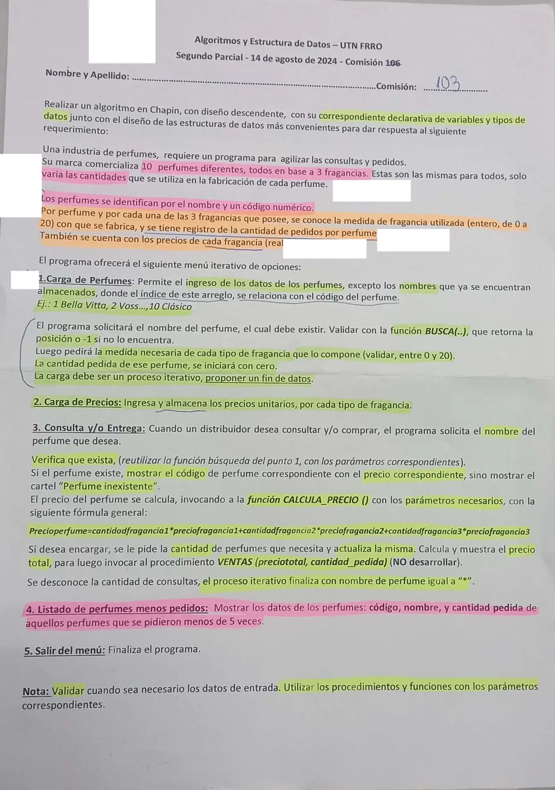

2° parcial, 14/08/2024 (Industria de perfumes)
2° parcial, 14/08/2024
Enunciado


Propuesta de respuesta
Respuesta no verificada. La propuso Luta Studios con inteligencia artificial y ningún docente la revisó. Puede tener errores.
La hoja pide el diagrama de Chapin. Va un diagrama por módulo, con su declaración de variables arriba, y primero el del programa principal. Si un diagrama no entra en la pantalla, tocalo para verlo completo. Después de los diagramas está el mismo algoritmo en Python, para que lo puedas probar.
Estructuras de datos
| Estructura | Qué guarda | Índices |
|---|---|---|
nombre | Nombre de cada perfume (ya cargado) | 0 a 9, el código menos 1 |
medida | Medida de cada fragancia en cada perfume | Fila 0 a 9 el perfume, columna 0 a 2 la fragancia |
pedida | Cantidad pedida de cada perfume | 0 a 9 |
precioFrag | Precio unitario de cada fragancia | 0 a 2 |
Menú iterativo
1. Carga de perfumes
2. Carga de precios
3. Consulta y/o entrega
4. Listado de perfumes menos pedidos
El mismo algoritmo en Python
Es el programa que se probó, con las mismas sentencias y en el mismo orden que las cajas. Cada Leer del diagrama es un input, convertido a int o float según la declaración, y cada Mostrar es un print.
# Estructuras
# nombre: arreglo [0..9] de str (ya cargado; el código del perfume es la posición + 1)
# medida: matriz [0..9][0..2] de int (perfume, fragancia)
# pedida: arreglo [0..9] de int (cantidad pedida de cada perfume)
# precioFrag: arreglo [0..2] de float
nombre = [""]*10
medida = [[0]*3 for n in range(10)]
pedida = [0]*10
precioFrag = [0.0]*3
def BUSCA(nom):
# nom: str
# i: int
i = 0
while i < 9 and nombre[i] != nom:
i = i + 1
if nombre[i] == nom:
return i
else:
return -1
def CARGA_PERFUMES():
# nom: str
# pos, f: int
# Fin de datos: nombre "*"
nom = input("Nombre del perfume (* para terminar): ")
while nom != "*":
pos = BUSCA(nom)
if pos == -1:
print("Perfume inexistente")
else:
for f in range(3):
medida[pos][f] = int(input("Medida de la fragancia " + str(f + 1) + " (0 a 20): "))
while medida[pos][f] < 0 or medida[pos][f] > 20:
medida[pos][f] = int(input("Entre 0 y 20: "))
pedida[pos] = 0
nom = input("Nombre del perfume (* para terminar): ")
def CARGA_PRECIOS():
# f: int
for f in range(3):
precioFrag[f] = float(input("Precio de la fragancia " + str(f + 1) + ": "))
while precioFrag[f] <= 0:
precioFrag[f] = float(input("Tiene que ser mayor que 0: "))
def CALCULA_PRECIO(cant, pcio):
# cant: arreglo [0..2] de int
# pcio: arreglo [0..2] de float
return cant[0] * pcio[0] + cant[1] * pcio[1] + cant[2] * pcio[2]
def CONSULTA():
# nom, resp: str
# pos, cant: int
# p, preciototal: float
nom = input("Nombre del perfume (* para terminar): ")
while nom != "*":
pos = BUSCA(nom)
if pos == -1:
print("Perfume inexistente")
else:
p = CALCULA_PRECIO(medida[pos], precioFrag)
print("Código:", pos + 1, "- precio:", p)
resp = input("¿Desea encargar? (S/N): ")
while resp != "S" and resp != "N":
resp = input("Responda S o N: ")
if resp == "S":
cant = int(input("Cantidad: "))
while cant <= 0:
cant = int(input("Tiene que ser mayor que 0: "))
pedida[pos] = pedida[pos] + cant
preciototal = p * cant
print("Precio total:", preciototal)
VENTAS(preciototal, cant)
nom = input("Nombre del perfume (* para terminar): ")
def MENOS_PEDIDOS():
# i: int
for i in range(10):
if pedida[i] < 5:
print(i + 1, nombre[i], pedida[i])
# Programa principal
# opcion: int
opcion = 0
while opcion != 5:
print("1. Carga de perfumes")
print("2. Carga de precios")
print("3. Consulta y/o entrega")
print("4. Listado de perfumes menos pedidos")
print("5. Salir")
opcion = int(input("Opción: "))
while opcion < 1 or opcion > 5:
opcion = int(input("Opción inválida: "))
match opcion:
case 1:
CARGA_PERFUMES()
case 2:
CARGA_PRECIOS()
case 3:
CONSULTA()
case 4:
MENOS_PEDIDOS()Respuesta no verificada. Puede tener errores.
Se armó con la hoja del examen y la página del 2° parcial (parámetros, arreglos, búsquedas, ordenamiento con arrastre y funciones que solo se invocan). Los arreglos se declaran como en las preguntas frecuentes de los TP 2024. El Chapin sigue la forma de las diapositivas del examen de Historia Clínica de 2019. La fórmula del precio es la de la hoja.
Quedó en duda: «Se pidieron menos de 5 veces» se leyó como cantidad pedida menor que 5, que es el dato que se guarda. Si tu comisión lo lee como cantidad de encargos, hace falta otro contador por perfume. Cargar de nuevo un perfume reemplaza sus medidas y vuelve a poner en cero lo pedido, como dice el punto 1. El fin de datos de la carga es el nombre *, igual que el de la consulta. VENTAS se invoca con el precio total y la cantidad de ese encargo, y no se desarrolla. El código del perfume es la posición más 1, porque el ejemplo de la hoja numera desde 1. Las diapositivas de la materia no muestran en Chapin la lectura de datos ni la selección múltiple. Acá van como Leer y como Según, con una columna por caso.
¿Cómo te fue?
Marcá cada tema del examen.
- ArreglosArreglos, en 2° parcial
- FuncionesFunciones que el enunciado pide invocar, en 2° parcial
- ParámetrosSubprogramas y parámetros, en 2° parcial